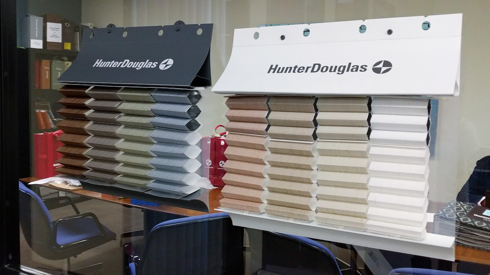

$6M Program Rescue
60 days, zero CapEx, 24,000 units shipped on a locked launch schedule.

I build things that work under real constraints — self-funded, no safety net, where bad decisions have immediate consequences. A decade of independent hardware development across CNC systems, composite fabrication, and production scaling taught me to treat capital and cycle time as engineering inputs, not someone else's problem. My work ranges from ground-up machine builds to rescuing a locked $6M manufacturing program 60 days before launch. I'm most effective when the process doesn't exist yet and someone has to create it.
60 days, zero CapEx, 24,000 units shipped on a locked launch schedule.

Full 3-axis conversion designed and built from mechanical first principles.

Hand-shaped plugs, multi-part fiberglass molds, and vacuum-bagged carbon fiber automotive parts.

Five airframe iterations and a ground-up custom goggle build when off-the-shelf options failed.

From prototype to 2,000+ units shipped — and out-competed the OEM's own subsequent release.

A permanently vehicle-integrated compute payload with custom automation logic, built before CarPlay existed.

A compact monitoring system built from repurposed endoscope hardware, adopted as a community standard and later commercialized by others.

A viral ergonomic build that spawned a worldwide accessory line of 20,000+ units.

CoreXY and Voron systems built from core components, including machined plates, custom harnesses, and dual-extrusion architecture.

Full CLA restoration of historical optics with custom tooling and machined adapters fabricated where no commercial solution exists.